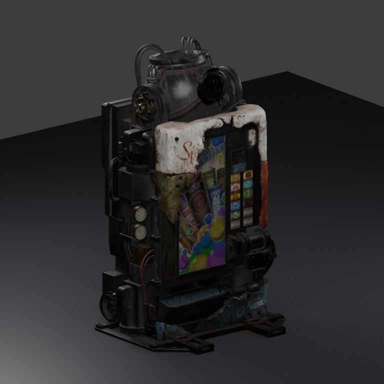
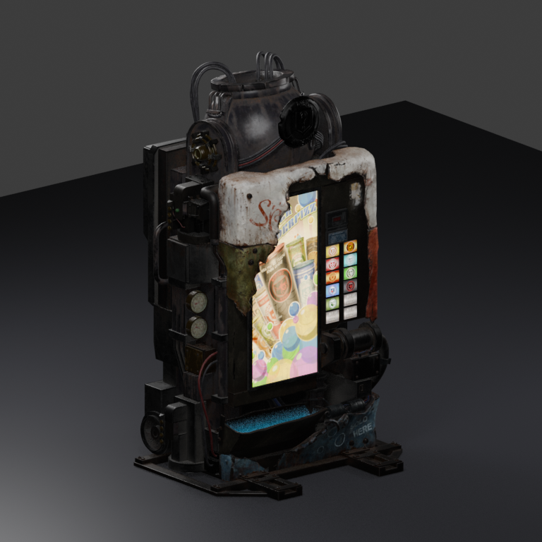

Original LOD0 geometry, UVs, materials and actual weighted activation pose imported through Blender MCP. The machine labels, original wear and native assets are preserved byte-for-byte. This bounded preview uses EEVEE, 1K source-derived preview textures and an approximate BRDF/alpha response. Original runtime textures are 4K. These images do not establish native visual approval.


Exact native source manifest · Preview provenance · Actual MCP execution · Only owned studio closed
All imported native inputs were hash-checked unchanged after review. Existing Blender PID 17140 was untouched; the owned 9912 studio was stopped before the native build. The user performs the final game, sound and animation review.